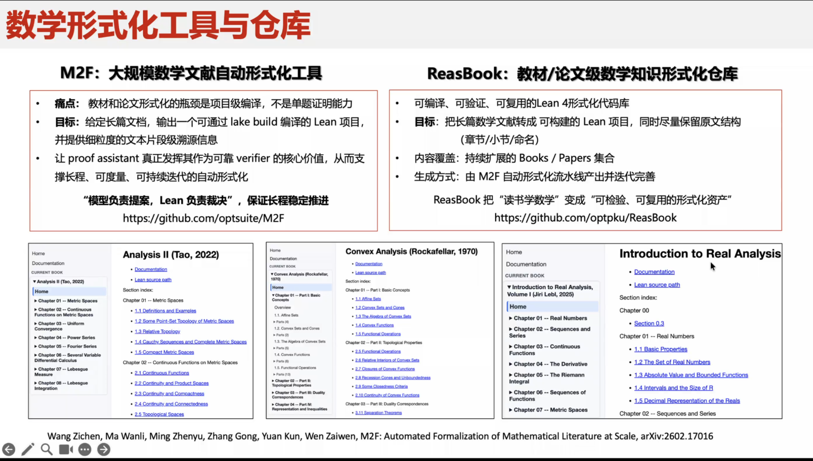
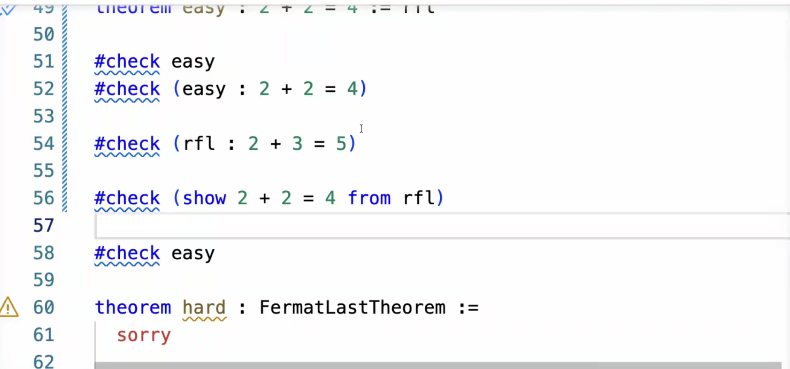

这是一个北大ai4math团队牵头的Lean4 Mathlib review为主题的学习交流和未来工作对接项目.
Lean4(Mathlib) 的思想来自于相信所有数学语句都能进行形式化表示. 然后如程序一般, 逻辑的关联可以使用语言编译等技术进行处理. 通过形式化的方式,我们可以让计算机来验证数学定理的正确性,从而提高数学研究的效率和准确性. 同时可以让人类更多focus在数学的简洁性上面.
根据这么多年的发展, 有一些很不错的成果. 比如tao主推的Mathlib视图从公理开始, 逐步构建了一个庞大的数学库, 包含了各种数学领域的定理和证明. 同时AI结合lean来处理数学问题,和常规数学表达转换为lean的知识库分发也是个很大的主题.
this is
- s
- M2F (团队成员作品)

import Mathlib.Data.Real.BasicCourse 1
经过训练,希望能掌握为能把任何自然语言的数学内容翻译成Lean4代码的能力,并且能在Lean4中进行一些基本的数学证明.
数学形式化
数学形式化和普通的数学证明有很多区别, 因为一个概念作为库函数是需要在普世情况下都是用,并且不能有歧义的. 这就要求我们在定义一个概念的时候,要非常清晰和严谨. 同时在证明一个定理的时候,也要非常细致和严谨,不能有任何的漏洞. 这个需要对概念收敛等操作.
Lean 和 mathlib是不一样的 lean知识个工具, mathlib
Ai可以生成很多好的lean代码, 但是不够好不够美.
同时需要考虑一些工程上面的事情, 比如可维护性, 工程能力等
Lean语言基本语法

| 数学字符 | 代码 |
|---|---|
| N | \N |
课后作业 01
-- An example.
example (a b c : ℝ) : a * b * c = b * (a * c) := by
rw [mul_comm a b]
rw [mul_assoc b a c]
-- Try these.
example (a b c : ℝ) : c * b * a = b * (a * c) := by
sorry
example (a b c : ℝ) : a * (b * c) = b * (a * c) := by
sorry
-- An example.
example (a b c : ℝ) : a * b * c = b * c * a := by
rw [mul_assoc]
rw [mul_comm]
/- Try doing the first of these without providing any arguments at all,
and the second with only one argument. -/
example (a b c : ℝ) : a * (b * c) = b * (c * a) := by
sorry
example (a b c : ℝ) : a * (b * c) = b * (a * c) := by
sorry
-- Using facts from the local context.
example (a b c d e f : ℝ) (h : a * b = c * d) (h' : e = f) : a * (b * e) = c * (d * f) := by
rw [h']
rw [← mul_assoc]
rw [h]
rw [mul_assoc]
example (a b c d e f : ℝ) (h : b * c = e * f) : a * b * c * d = a * e * f * d := by
sorry
example (a b c d : ℝ) (hyp : c = b * a - d) (hyp' : d = a * b) : c = 0 := by
sorry
example (a b c d e f : ℝ) (h : a * b = c * d) (h' : e = f) : a * (b * e) = c * (d * f) := by
rw [h', ← mul_assoc, h, mul_assoc]
section
variable (a b c d e f : ℝ)
example (h : a * b = c * d) (h' : e = f) : a * (b * e) = c * (d * f) := by
rw [h', ← mul_assoc, h, mul_assoc]
end
section
variable (a b c : ℝ)
#check a
#check a + b
#check (a : ℝ)
#check mul_comm a b
#check (mul_comm a b : a * b = b * a)
#check mul_assoc c a b
#check mul_comm a
#check mul_comm
end
section
variable (a b : ℝ)
example : (a + b) * (a + b) = a * a + 2 * (a * b) + b * b := by
rw [mul_add, add_mul, add_mul]
rw [← add_assoc, add_assoc (a * a)]
rw [mul_comm b a, ← two_mul]
example : (a + b) * (a + b) = a * a + 2 * (a * b) + b * b :=
calc
(a + b) * (a + b) = a * a + b * a + (a * b + b * b) := by
rw [mul_add, add_mul, add_mul]
_ = a * a + (b * a + a * b) + b * b := by
rw [← add_assoc, add_assoc (a * a)]
_ = a * a + 2 * (a * b) + b * b := by
rw [mul_comm b a, ← two_mul]
example : (a + b) * (a + b) = a * a + 2 * (a * b) + b * b :=
calc
(a + b) * (a + b) = a * a + b * a + (a * b + b * b) := by
sorry
_ = a * a + (b * a + a * b) + b * b := by
sorry
_ = a * a + 2 * (a * b) + b * b := by
sorry
end
-- Try these. For the second, use the theorems listed underneath.
section
variable (a b c d : ℝ)
example : (a + b) * (c + d) = a * c + a * d + b * c + b * d := by
sorry
example (a b : ℝ) : (a + b) * (a - b) = a ^ 2 - b ^ 2 := by
sorry
#check pow_two a
#check mul_sub a b c
#check add_mul a b c
#check add_sub a b c
#check sub_sub a b c
#check add_zero a
end
-- Examples.
section
variable (a b c d : ℝ)
example (a b c d : ℝ) (hyp : c = d * a + b) (hyp' : b = a * d) : c = 2 * a * d := by
rw [hyp'] at hyp
rw [mul_comm d a] at hyp
rw [← two_mul (a * d)] at hyp
rw [← mul_assoc 2 a d] at hyp
exact hyp
example : c * b * a = b * (a * c) := by
ring
example : (a + b) * (a + b) = a * a + 2 * (a * b) + b * b := by
ring
example : (a + b) * (a - b) = a ^ 2 - b ^ 2 := by
ring
example (hyp : c = d * a + b) (hyp' : b = a * d) : c = 2 * a * d := by
rw [hyp, hyp']
ring
end
example (a b c : ℕ) (h : a + b = c) : (a + b) * (a + b) = a * c + b * c := by
nth_rw 2 [h]
rw [add_mul]